Device feedback for 1.0.0
Design version: 1.0.0, direction B · Reach. Proposed 2026-11-18, after the app was used on an iPhone 16 Pro Max; not yet part of the plan or of the screen counts. The behavior, the wording, the tests, the device checks and the owner’s decisions are in device-feedback-1.0.md. Every new sentence is a draft for the Honesty review.
Five changes, designed as one batch. Q is not touched. Nothing is read from the photo library and nothing is stored. No distance or other number is shown that the device does not report and a device check has not confirmed.
| Item | Today | Proposed |
|---|---|---|
| The Last Photo spot before the first photo | Empty, each time the app opens. | A button, Open Photos, that opens the Photos app. The first saved photo takes its place. |
| Use the Whole Range, in Bracket Settings | Looks the same whether or not the whole range is set; the dimmed form failed the contrast check in night mode. | Never dimmed. A check mark and the selected trait while the whole range is in use. |
| Close-up focus | The app never changes lenses by itself, and says so nowhere. | An Honesty entry, opened from the close-up hint by one new button. |
| “Hold it steady or use a tripod.” | Shown with Manual Controls on whenever the shutter is slower than the handheld rule, and with them off whenever the Fast Shutter limit is lifted. | Never with Manual Controls on. With them off, only while the shutter in use is slower than the lens can be held at, counting its stabilization. |
| The focus square and Lock | Stay until the scene changes. | Fade three seconds after a tap. Locked, they never fade. |
1. The Last Photo spot before the first photo
The app can add photos to the library and cannot read it, and it keeps the thumbnail and previews in memory only. So the spot beside the shutter starts empty each time the app opens. It now holds a button that opens the Photos app. The button never says it shows the last photo: Photos opens where the person left it.
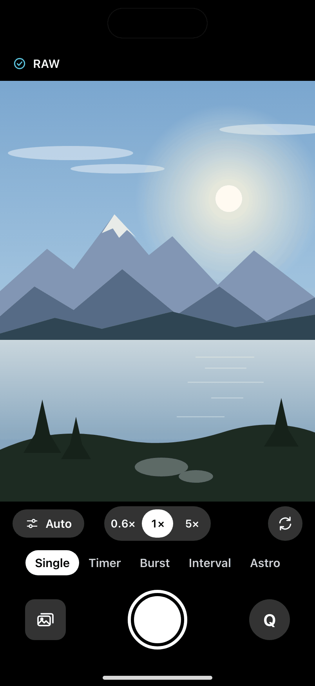
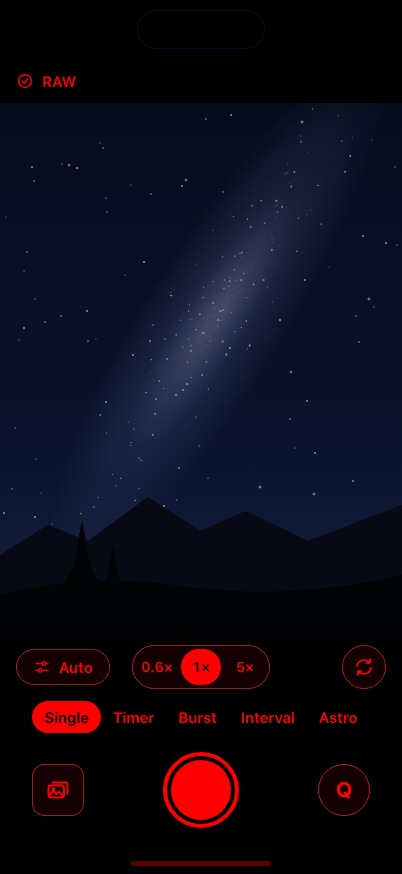
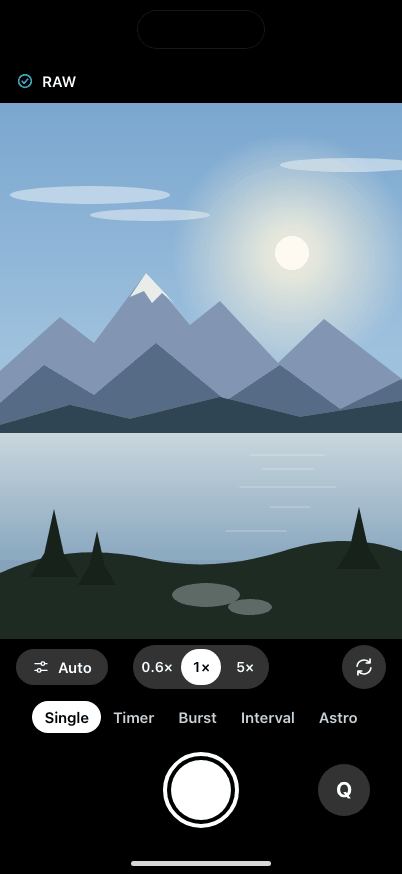
iPad
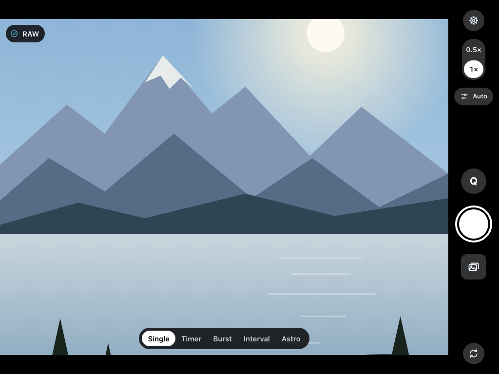
2. Use the Whole Range
A row that is already in effect is shown selected, with a check mark, at full contrast. In night mode the words and the check mark are 5.2:1 on the row; the dimmed row this replaces was 1.6:1.
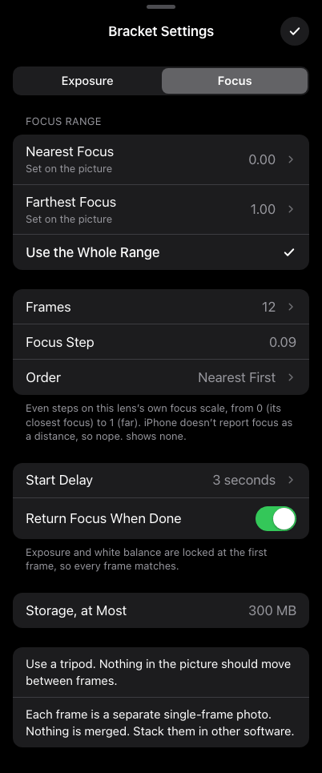
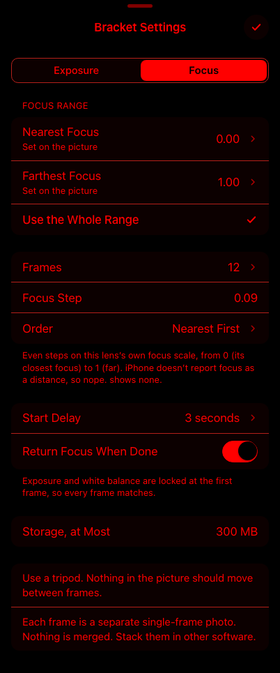
3. Close-up focus
Each lens is its own camera, so the app never changes lenses by itself, and a subject nearer than a lens can focus stays soft. The Honesty page says so, with no distance, and the close-up hint links to it.
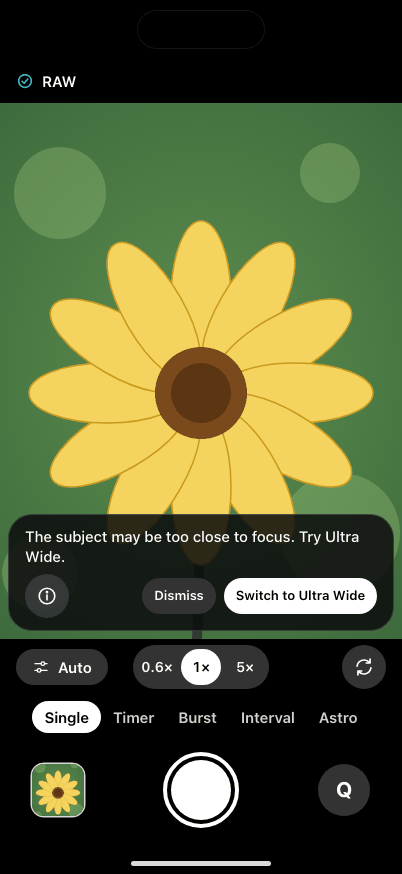
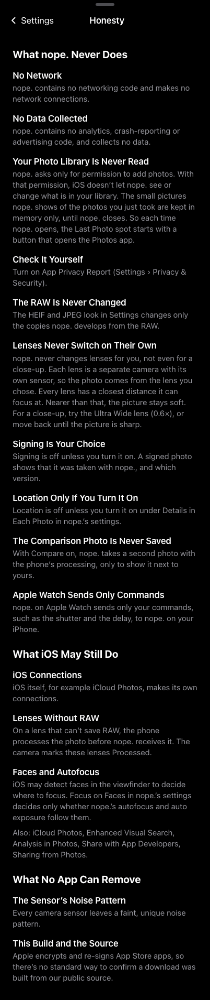
4. “Hold it steady or use a tripod.”
With Manual Controls on, the hint is never shown. With them off, it follows the shutter the camera is using, compared with a limit that counts the lens’s stabilization; it does not flicker, because it turns off only half a stop past the limit, and it stays at least two seconds. The limits are provisional until the device checks.
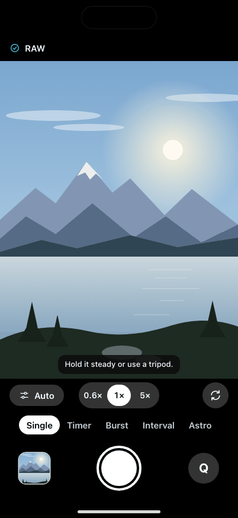
5. The focus square and Lock
After a tap the square and Lock show for three seconds, then fade; the camera keeps focusing and exposing at that point. A tap brings them back, and touch and hold locks at once. Locked, the square and AE/AF stay. With VoiceOver or Switch Control on, nothing fades.
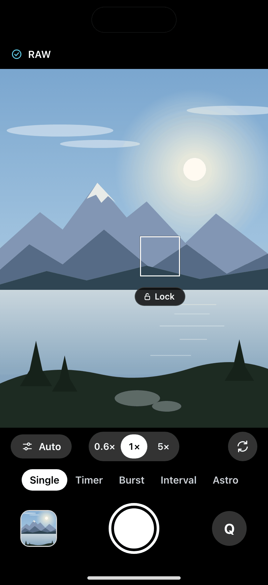
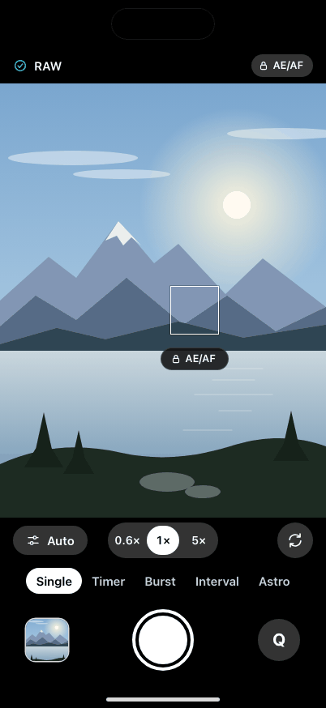
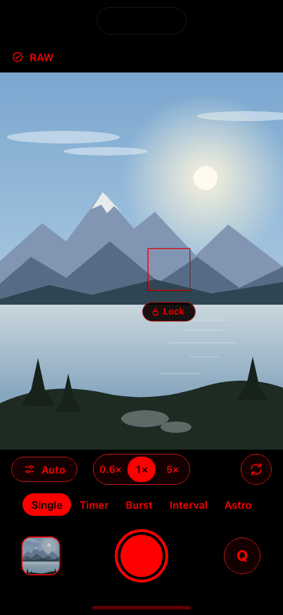
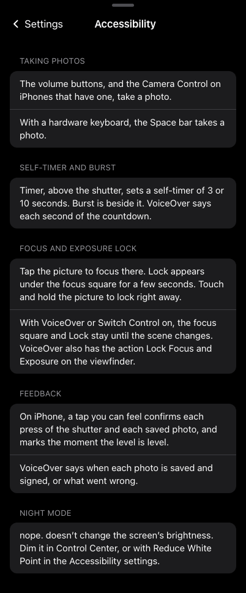
Noted for the build
- The close-up hint’s detector is being fixed so the hint appears on real devices. Its sentence and buttons are unchanged apart from About Close-Up Focus.
- A focus bracket’s Live Activity gets the Stop button Interval and Astro already have, in the same place. Its VoiceOver name is Stop Bracket.
The decisions for the owner, 22 in all with a recommendation for each, are in device-feedback-1.0.md, section 7.